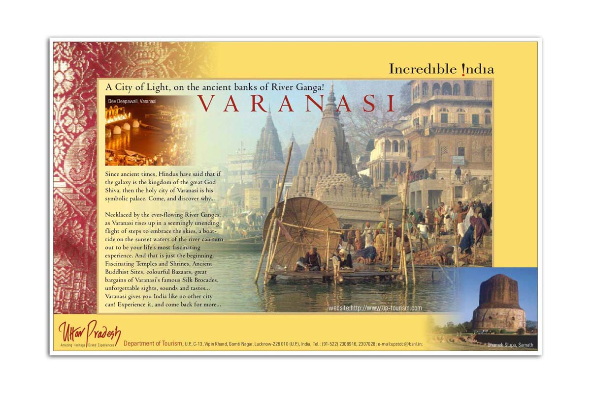

THE VARANASI CITY
AREA
: 340 Km
2
ALTITUDE
: 435 METERS ABOVE AMS LINE
POPULATION
: 80,067 (2001)
SEASON
: OCTOBER - MARCH
About the city :
It is the city of knowledge and movements. It is situated at the holy bank of the Ganga. Varanasi is the holiest place of India. It will rebuit like Quota of Japan.
Highlights of city :

1.KASHI VISHWANATH TEMPLE
2.THE GANGA ARTI
3.BHU